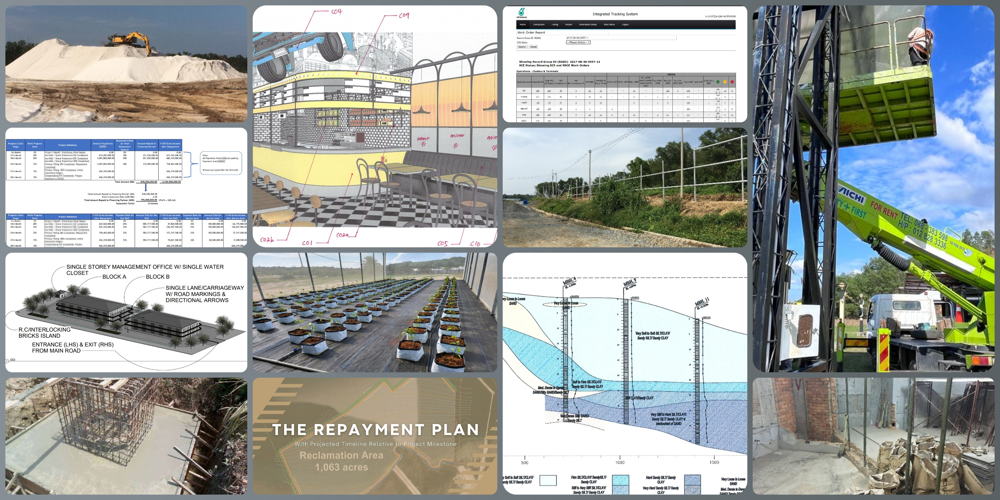
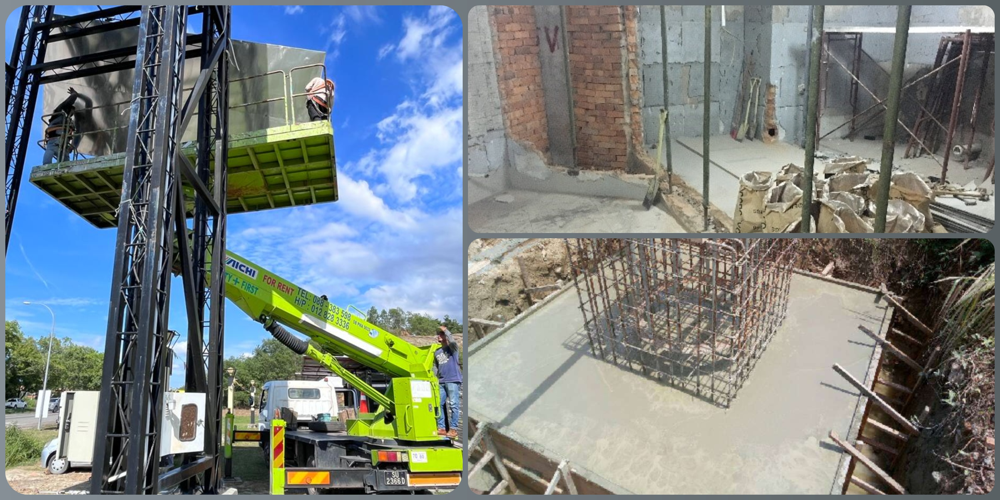
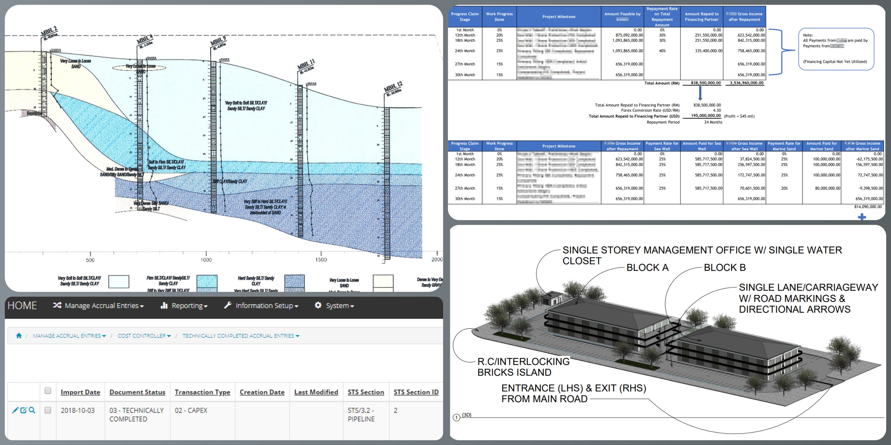
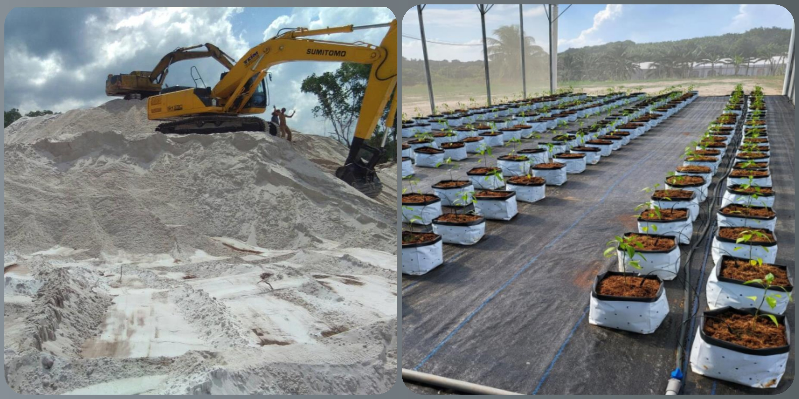

Intro

"We believe success is built on trust, precision, and progress"
Firmly established in East Malaysia, ML Utama brings together expertise in Civil, Structural & Engineering
(C/S/E), Technical & Architectural (T/A) consultation, and Agricultural & Trade
(A/T) advisory.
We deliver solutions that unite practical field knowledge with international standards; outcomes defined by
compliance, efficiency, and quality.
Beyond technical delivery, we believe in building connections that create new possibilities. By leveraging a strong
network of professionals and partners, ML Utama helps clients navigate complex requirements, unlock opportunities, and
achieve sustainable growth.
C / S / E

Civil, Structural, and Engineering Expertise
We deliver practical, standards-driven solutions in civil, structural, and broader engineering scopes. From feasibility
and design review to compliance, supervision, and close-out, we focus on reliable outcomes that align with budget,
schedule, and safety.
T / A

Technical & Architectural Consultations
We prepare submissions, navigate regulatory requirements, and coordinate with authorities to de-risk approvals. Our role
extends through the project lifecycle; clarifying scope, unlocking bottlenecks, and aligning stakeholders to deliver
clear, buildable solutions.
A / T

Agricultural & Trade Advisory
Beyond construction, we advise on agriculture and trade market access, partner due diligence, and documentation
workflows. We leverage trusted networks to connect clients with resources and sustainable growth opportunities across
borders.
Contact
Not every path is visible. Some are built through the right connections.
If you’re searching for more than the ordinary, the next step begins here.